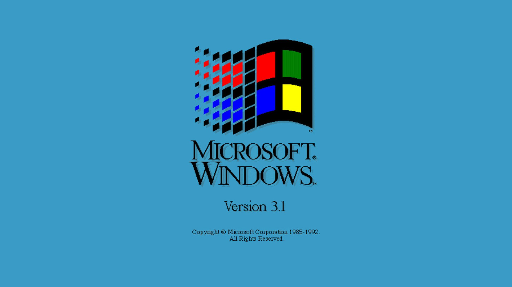
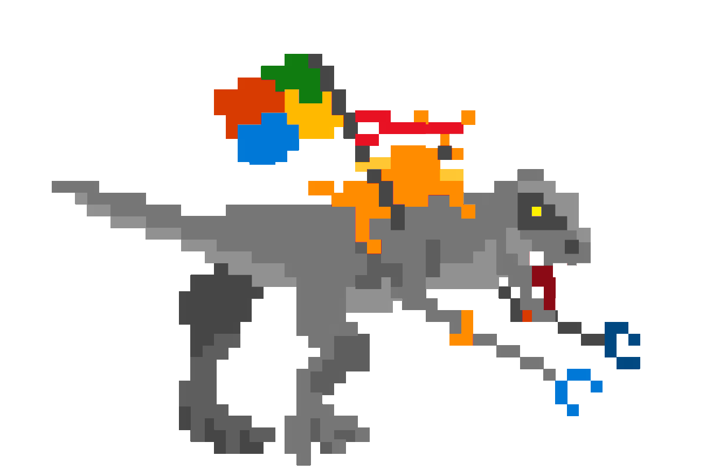

45:00

Command Prompt
Microsoft(R) Windows NT(TM)
(C) Copyright 1985-1995 Microsoft Corp.
C:\>
Hand Scanner
It's now safe to turn off
your computer
Microsoft Windows 3.1 Clippy Edition
════════════════════════════════════
Please sign in
Submit
Enter your pin
Submit Pin
Your Admin requires phone
factor authentication.
Calling...
Retry
